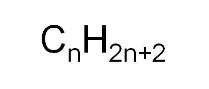

Crude oil is: -Formed over millions of years (from the fossilised remains of plankton). -Found in porous rocks in the Earth's crust. -A finite resource that is used to produce fuels and other chemicals. Most of the compounds in crude oil are hydrocarbons (hydrocarbons are only made up of hydrogen and carbon atoms). Hydrocarbon molecules vary in size. Their size affects their characteristics and their uses as fuels. The larger the hydrocarbon: the more viscous it is, the higher its boiling point, the less volatile it is, the less easily it ignites.
Crude oil can be separated into different fractions through the process of fractional distillation. Fractional distillation works by making use of the different boiling points of the varied hydrocarbons found in crude oil (as crude oil is a mixture of hydrocarbons). A tall column is separated into different fractions (vertically) with each fraction having a condenser at lowering temperatures the higher you go. When the crude oil is heated to the point of evaporation, the vapour moves up the column and the different hydrocarbons condense at their respective height. The shorter hydrocarbons are collected at the top and the heavier hydrocarbons at the bottom.
Alkanes are hydrocarbons that are made up of carbon atoms that are linked to four other atoms by single bonds. They are best described as saturated hydrocarbons. Alkanes are fairly unreactive, but they burn well.
The general formula for alkanes is:
Alkanes can be drawn with a single line between atoms, which represents a single covalent bond:
The shorter-chain alkanes release energy more quickly by burning, so there is greater demand for them as fuel.
Most fuels are compounds of hydrogen and carbon. Many also contain sulphur.
During the combustion (burning with oxygen) of hydrocarbon fuels:
-Both carbon and hydrogen are oxidised.
-Energy is released.
-Waste products are produced, which are released into the atmosphere.
If combustion is not complete (due to lack of oxygen), then carbon monoxide, unburnt fuels and particulates containing soot may be released. Carbon monoxide is a colourless, odourless and toxic gas. Particulates can cause global dimming by reducing the amount of sunlight reaching the Earth's surface and particulates can also cause damage to people's lungs. Due to the high temperature reached when fuels burn, nitrogen in the air can react with oxygen to form nitrogen oxides. These gases can cause respiratory problems in people and react with rain water (in the smae way as sulphur dioxide) to form acid rain, which can damage plants and buildings. Sulphur can be removed from fuels before burning (in motor vehicles) and removed from the waste gases after combustion (in power stations).